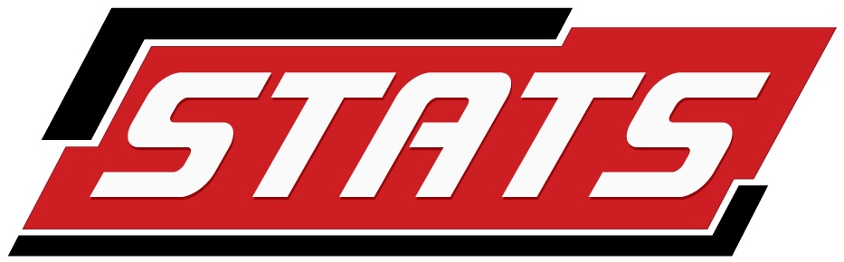

James A Ellis
my name is
james
Research
Visualization
Muses
About Me
Recovering neuroscientist. Data geek.
I am currently a data analyst at

where I provide statistical analysis and solutions to NFL and NCAA teams, in addition to other STATS' partners in the media.
I completed my graduate work in the
SeNSE Lab
, a team within the
Neuroscience and Robotics Group
at
Northwestern University
.
Before this, I was a
Quantitative User Researcher
at
I previously worked with
[x]
, on
Google Glass
.
Research
Visualization
Muses
About Me
 at Northwestern University.
at Northwestern University.